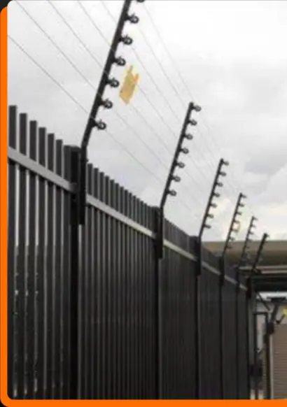
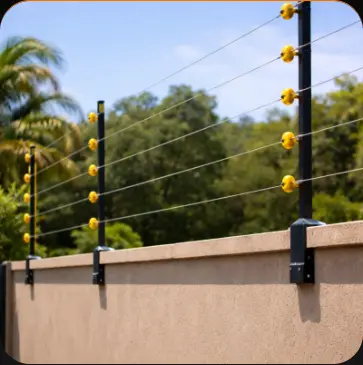
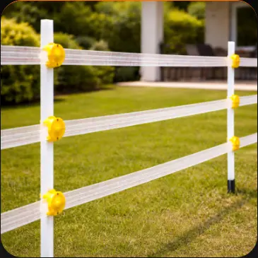
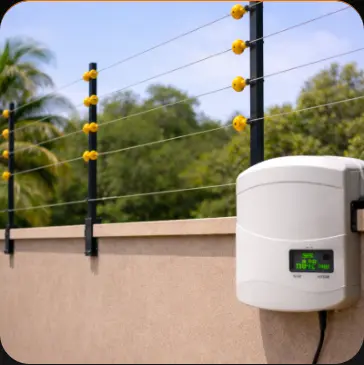

Projeto do perímetro
Análise dos acessos, altura dos muros, áreas vulneráveis e extensão necessária para uma instalação eficiente.

Cerca elétrica moderna, eficiente e dimensionada para reforçar residências, condomínios, comércios e empresas.
Avaliamos o perímetro, definimos o espaçamento e instalamos todos os componentes para alcançar desempenho, segurança e durabilidade.
Análise dos acessos, altura dos muros, áreas vulneráveis e extensão necessária para uma instalação eficiente.
Equipamento dimensionado para alimentar o sistema com pulsos seguros e alto poder de dissuasão.
Integração com sirene e central de alarme para sinalizar cortes, aterramento ou tentativas de violação.
Inspeção dos fios, isoladores, aterramento e conexões para preservar a eficiência do conjunto.
Soluções discretas para reforçar a segurança sem comprometer o visual da fachada.
Proteção para fachadas, depósitos, condomínios e áreas comerciais com maior extensão.
Eficiência, acabamento e integração variam conforme o imóvel. Indicamos o modelo mais adequado após a avaliação técnica.

Fios horizontais sobre hastes e isoladores formam uma barreira eficiente, resistente e de excelente custo-benefício.

Combina segurança com um acabamento visual mais leve, sendo indicada para projetos residenciais específicos.

Integra a barreira a uma central de alarme para emitir alertas em caso de violação ou falha no sistema.